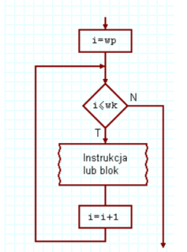
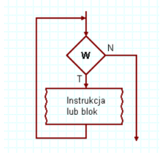
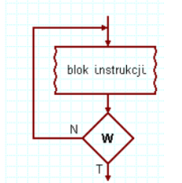

a. Konstrukcja- for (zainicjowanie_zmiennej; warunek_kończący_wykonywanie_pętli; zmiana_zmiennej) { kod który zostanie wykonany pewną ilość razy }
b. Opis- dobrze wimy ile razy zostanie wykonana
c. Schemat blokowy- 
a. Konstrukcja- while (wyrażenie_sprawdzające_zakończenie_pętli) {...fragment kodu który będzie powtarzany... }
b. Opis- pętla while najpierw sprawdza warunek, potem coś wykonuje, pętla może się nie wykonać.
c. Schemat blokowy- 
a. Konstrukcja- Do {...fragment kodu który będzie powtarzany... } while (false)
b. Opis- pętla do...while zawsze wykona jedną iterację, zanim sprawdzi warunek. Zawsze więc wykona jakieś zadanie
c. Schemat blokowy- 